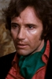
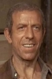

Also known as:La notte che Evelyn uscì dalla tomba (original title)
Country:Italy, 102 minutes
Spoken languages:Italian
Genres:Mystery, Horror, Thriller
Director(s):Emilio P. Miraglia
Writer(s):Massimo Felisatti, Fabio Pittorru, Emilio P. Miraglia
Video Codec:Unknown
Number: 2863


Certification:R
Storyline:
A rich, mentally-unstable man—with a penchant for playing deadly S&M games with women who resemble his dead wife—sparks off a chain of bizarre events after getting remarried.
Cast:  


Medium: Bluray,
Comments: Part of: Giallo Essentials - White
Loaned: No
Aspect ratio: Unknown